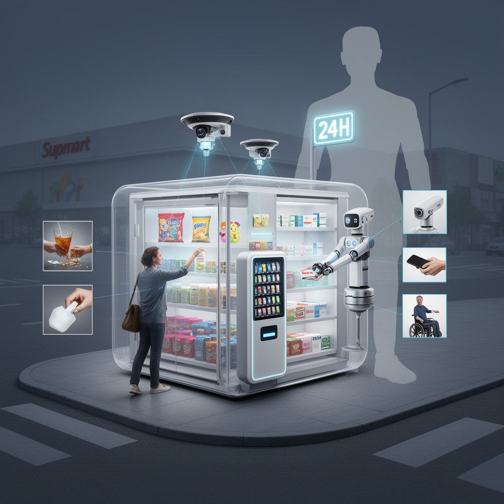

AI Panorama · fly through the Qwen 3.8 Max edition
This page was written entirely by Qwen 3.8 Max (Alibaba), as one of the magazine's editions - eight AI models each wrote their own version of every story from the same frozen sources.
An encyclopedia idea, explained by this edition wherever the stories leaned on it.

Autonomous retail is a broad term for shops that operate with little or no human staff. It can mean different things: cashier-less stores that track what shoppers take and charge them automatically, vending systems, robotic kiosks, or machines that physically stock, pick and hand over goods. The common idea is to replace or reduce the human roles in selling, restocking and checkout. Small controlled formats are the easiest place to start, because the range of products, the layout and the customer interactions can be limited. That is why a nine-square-metre capsule selling packaged snacks, toys and medicines is a more plausible first test than a large supermarket. The appeal to operators is continuous operation and lower staffing costs; the appeal to backers and visitors can also be novelty and publicity. The harder questions are reliability, safety, accessibility and what happens when the system meets an edge case, such as a confused customer, a spilled drink or an item the robot cannot grasp. Autonomous retail is therefore less a finished model than a set of experiments in how far automation can go in everyday commerce.
Autonomous retail is a shop or retail operation where software systems, rather than human managers, handle many of the decisions normally made by people: choosing products, setting prices, arranging opening hours, ordering stock, creating branding, hiring staff and managing schedules. The point is not always to remove every human from the building — someone still needs to serve customers, restock shelves and handle problems — but to test whether software can coordinate the business side. In practice, such stores are usually experiments. They show what AI agents can do when given money, internet access and a real-world goal, but they also reveal limits: forgotten policies, poor judgment about hires, weak enforcement of rules, and financial losses. Autonomous retail matters because it is one of the first places ordinary people can encounter AI management not as a recommendation system, but as an employer.